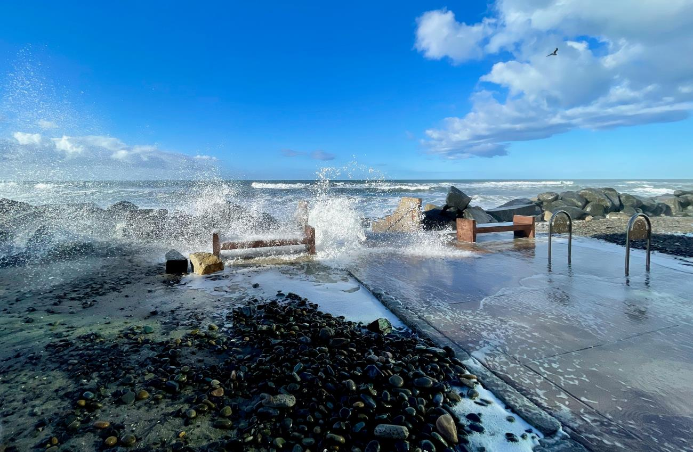

Sea level rise is one of the biggest environmental challenges facing our planet today. As global temperatures continue to rise, glaciers and ice sheets melt, adding more water to the oceans. At the same time, warmer ocean water expands, causing sea levels to increase even further.
Rising sea levels are already affecting many coastal communities around the world. They can cause flooding, damage homes and roads, wash away beaches, and destroy habitats for plants and animals. If climate change continues, these impacts are expected to become even more serious in the future.
This website explains what sea level rise is, why it is happening, how it affects people and the environment, and the different ways we can help reduce its impact. By learning more about the issue, we can all play a part in protecting our planet.